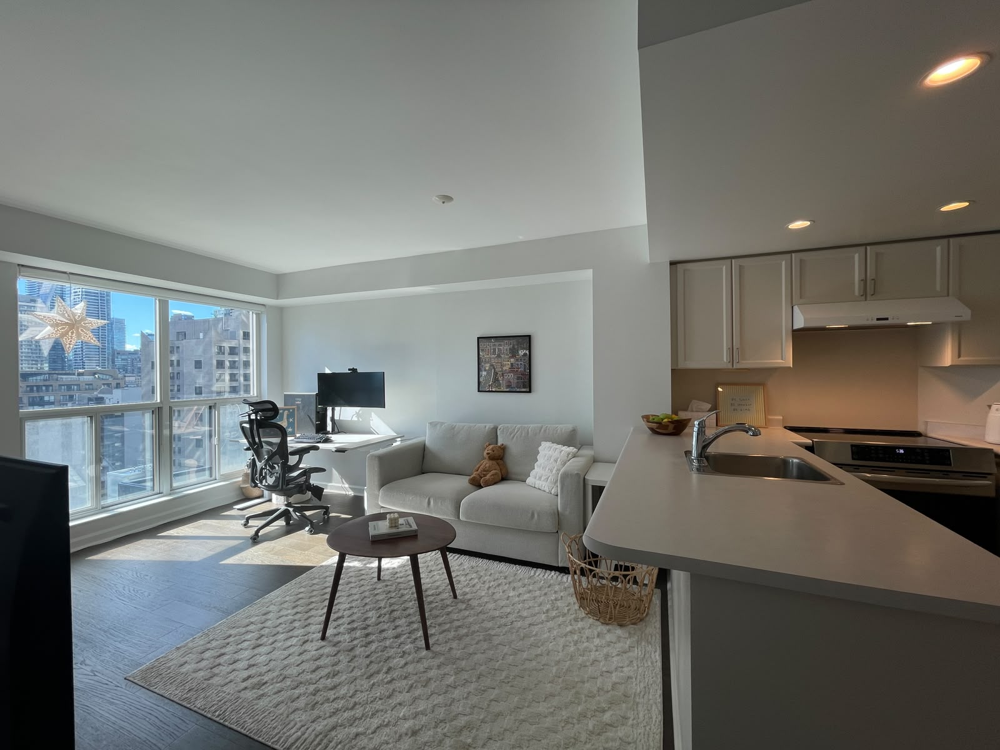
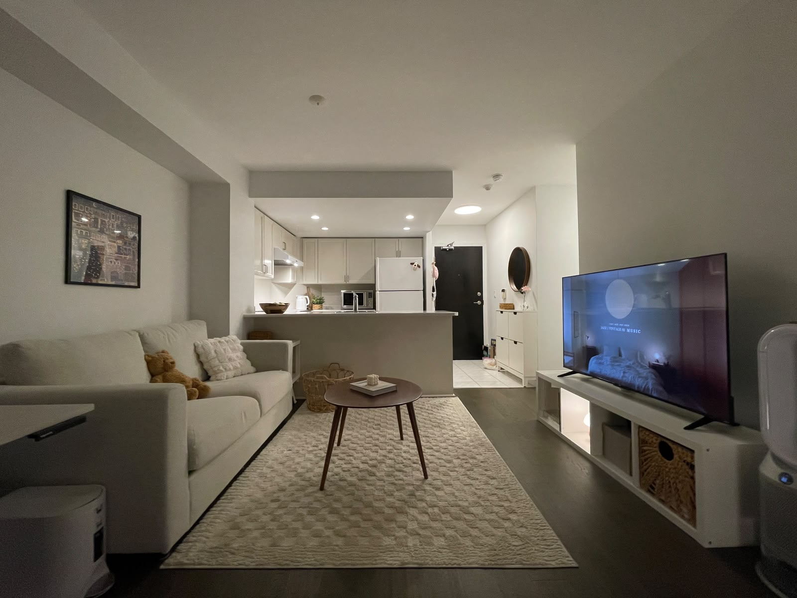
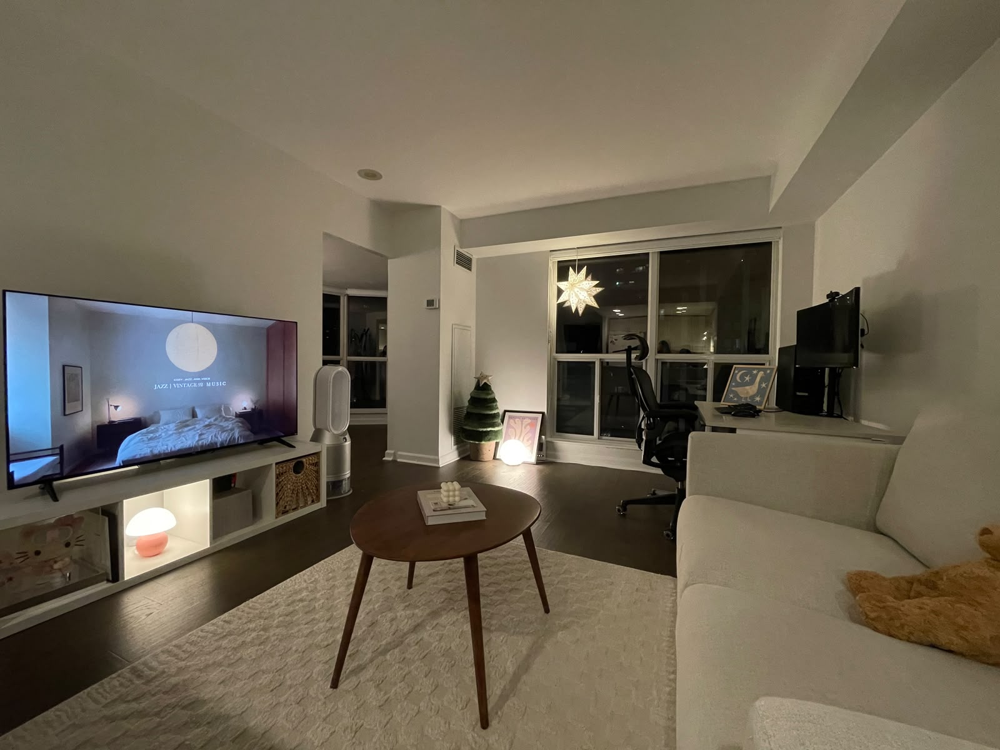

Let the light in.
South-facing windows, engineered hardwood floors, and custom-fitted roller shades. Space that feels good from the first coffee to the last page.
2011–8 Park Road · Preparing for sale
Sun on the floor. Something good on the stove.
A little space in the city to make your own.
2 bedrooms · 2 full bathrooms · Approx. 698 sq. ft.

01 / A home for everyday life
Coffee for two. Room to grow.
A south-facing home between Yorkville and Rosedale, with floor-to-ceiling windows in the living room and both bedrooms. Bright days, open city views, and a partial glimpse of the lake.
An efficient layout brings cooking, catching up, and unwinding together. Two bedrooms give you options: a place to sleep, a work-from-home room, or somewhere to welcome a guest. Two full bathrooms make shared routines a little easier.
The comforts that count
South-facing windows, engineered hardwood floors, and custom-fitted roller shades. Space that feels good from the first coffee to the last page.
A refreshed kitchen with updated cabinetry and backsplash, a Frigidaire Gallery induction range with convection and Air Fry, and a range hood vented directly outdoors.
Direct indoor access to Bloor–Yonge subway and building access to GoodLife Fitness. Groceries, cafés, and the next dinner out are close to home.
Room beyond your rooms
A landscaped rooftop terrace with BBQs and lounge areas, plus a party room, media room, meeting room, and library/lounge. A 24-hour concierge and on-site management support everyday life.
Maintenance fees include heat, electricity, water, and central A/C. Rental parking options are available within the building; availability and costs are separate.
02 / A closer look
A real home, in daylight and after dark.
Explore the floor plan
Tap a numbered marker to see the home from that spot. The arrows show the approximate direction of each photo.

01 / Toward the kitchenA view from the window end of the living room.
02 / Toward the windowsThe living area from the kitchen side. 03 / A daylight perspectiveThe living room and kitchen, looking toward the windows.The photos are our actual home, with our own furniture. No virtual staging.
The furnished plan is an AI illustration based on the original layout; furnishings and fine details are illustrative. Photo positions are approximate. See the original plan for dimensions.
View the original floor plan ↗03 / Life around here
Pick up supper. Catch a train. Take the long way home.
Explore the neighbourhood using the destination links alongside this map.
8 Home · T Subway · L Groceries · S School
Rosedale JPS attendance area · Boundary supplied by TDSB.
Distances below are approximate straight-line distances, not walking routes. Map locations represent buildings or stations; indoor paths vary.
Direct indoor access from the building. A simpler start to the commute.
LLongo’s, Hudson’s Bay Centre~70 m away · 100 Bloor Street EastFresh groceries close by, for the nights you feel like cooking together.
For the chapter after this one
JK–Grade 6 · 22 South Drive · ~710 m away
The TDSB street guide specifically lists 8 Park Road in its attendance area, with Deer Park for Grades 7–8 and Jarvis for Grades 9–12.
A historical academic score, not a current-year rating. Confirm program eligibility and current boundaries with TDSB.
Check the official school assignment ↗School assignment and boundary: TDSB street guide and TDSB attendance map. School rating: Fraser Institute’s 2024 report (2022–23 results). Station: TTC. Groceries: Longo’s. Map points: OpenStreetMap; school location: TDSB. Property features and indoor connections supplied by the owner. Researched October 6, 2026.
04 / Your next chapter
Interested in Suite 2011? Viewing information and a way
to get in touch will be available here soon.